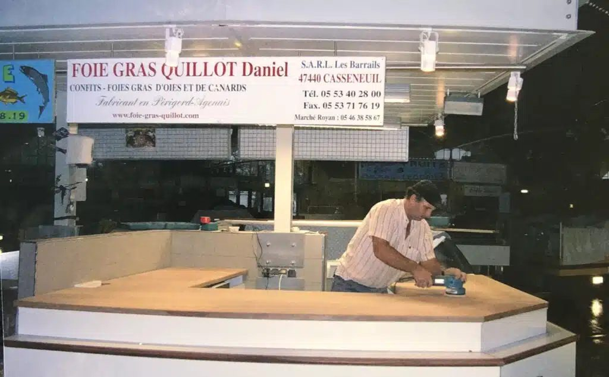
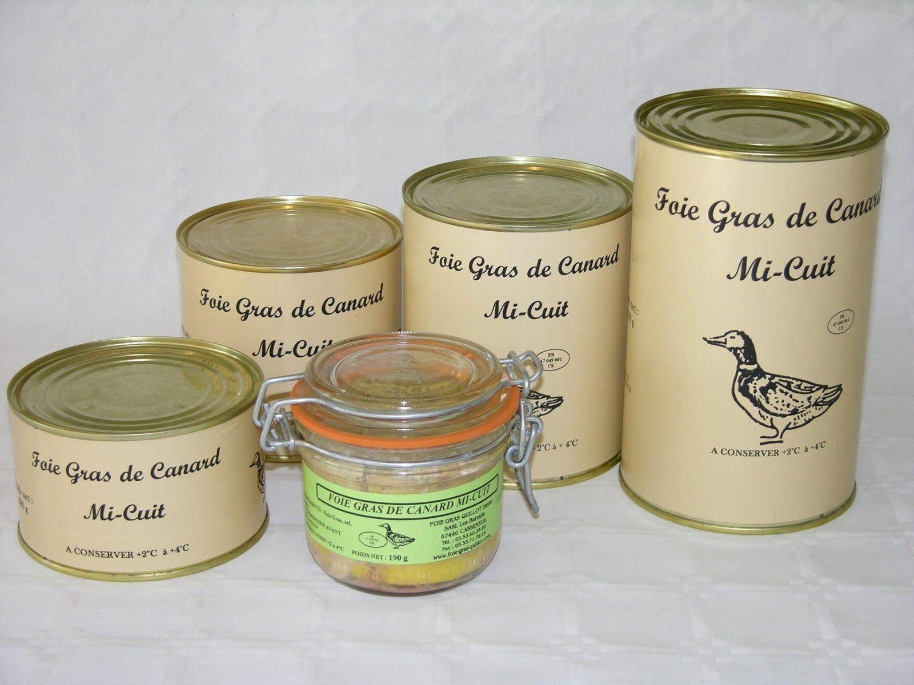

Daniel Quillot
Il lance la production de canards et d’oies en 1981, fonde la SARL en 1991 et passe le relais en 2021. Les rillettes de sa grand-mère n’ont pas quitté la carte.

Quarante-cinq ans d’atelier, de marchés et de recettes transmises dans la famille.
Cette année-là, Daniel, le fils de M. et Mme Quillot, démarre la production et la préparation de canards et d’oies sur l’exploitation familiale. Sa grand-mère paternelle l’initie vite à la rillette pur canard et à la rillette pure oie.
Cette recette ancienne a presque disparu des conserveries modernes. Elle est pourtant toujours fabriquée dans notre laboratoire : elle demande du temps et de la main-d’œuvre, mais c’est elle, encore aujourd’hui, qui fait la renommée de la maison.
Goûter les rillettesDe la ferme des Barrails aux étals du Bassin d’Arcachon et de Royan.
Élevage, gavage et vente de canards gras frais : l’activité se développe sur les marchés de Bergerac et de Ribérac. Daniel apprend la rillette auprès de sa grand-mère.

La ferme prépare désormais ses canards et ses oies gras en conserves. La vente commence au marché de Montalivet, en Gironde, puis à Soulac-sur-Mer en 1983. Jusqu’en 1991, tout est préparé dans le laboratoire de la ferme, aux normes françaises.
Naissance de la SARL Les Barrails « Foie Gras Quillot » et construction d’un laboratoire aux normes européennes, pour vendre aussi aux restaurateurs et aux magasins.

L’entreprise obtient l’agrément européen. Son métier : transformer et commercialiser des produits à base de canards et d’oies élevés et gavés en France.
Le 6 décembre, l’entreprise s’installe sur le marché de Royan, en Charente-Maritime. Le marché a rouvert le 3 juin 2024, après rénovation.

En 2012, arrivée à Claouey, à Lège-Cap-Ferret. En 2018, c’est le marché d’Andernos-les-Bains. Le 20 juin 2024, l’étal s’installe dans le nouveau marché municipal, après la démolition de la halle.

Daniel prend sa retraite. La SAS Foie Gras Quillot est créée : la famille reprend le flambeau.
En octobre, Thierry Batista-Quillot, neveu de Daniel, rejoint l’entreprise, comme son frère Bertrand avant lui.

Les carcasses sont confites dans la graisse.
La viande maigre, celle qui se cache près des os, est retirée à la main.
Elle est assaisonnée puis mise en boîte, sans porc : uniquement du canard, ou de l’oie.
À savourer à température ambiante, pour garder toute la souplesse et le parfum.
Une entreprise qui se transmet à l’intérieur de la famille.
Il lance la production de canards et d’oies en 1981, fonde la SARL en 1991 et passe le relais en 2021. Les rillettes de sa grand-mère n’ont pas quitté la carte.
Le neveu de Daniel rejoint l’entreprise en octobre 2024, comme son frère Bertrand avant lui. On le retrouve derrière l’étal, sur les marchés.

Le public a voté : le cassoulet de la maison Quillot, aux haricots tarbais, a décroché le prix du public au championnat du monde.
Goûter le cassoulet
La boutique À cuisiner
À cuisiner